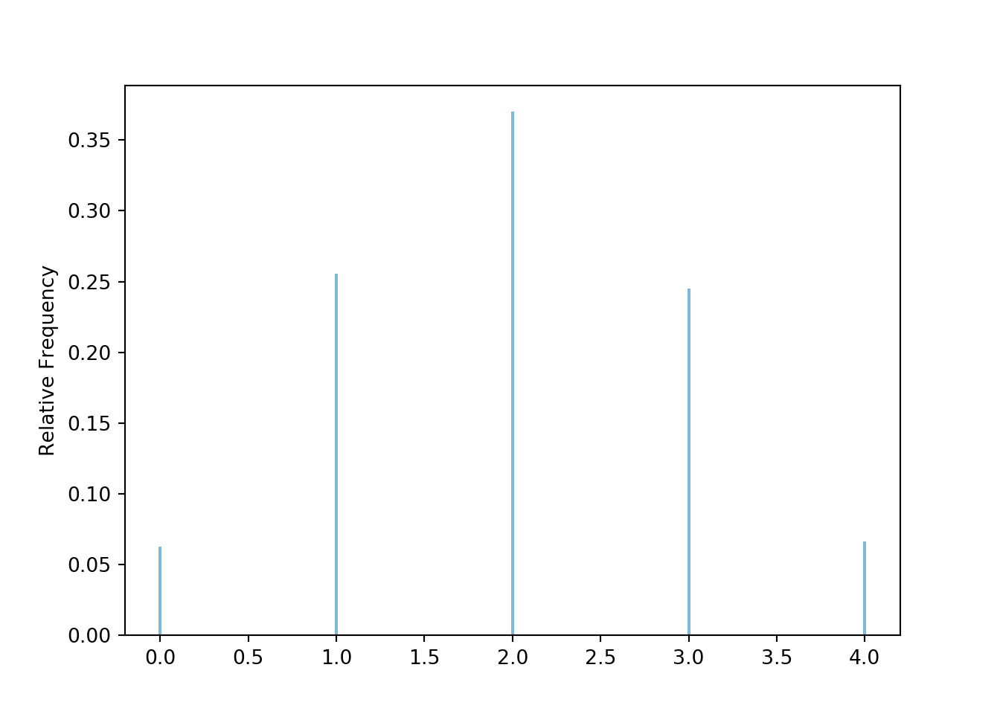
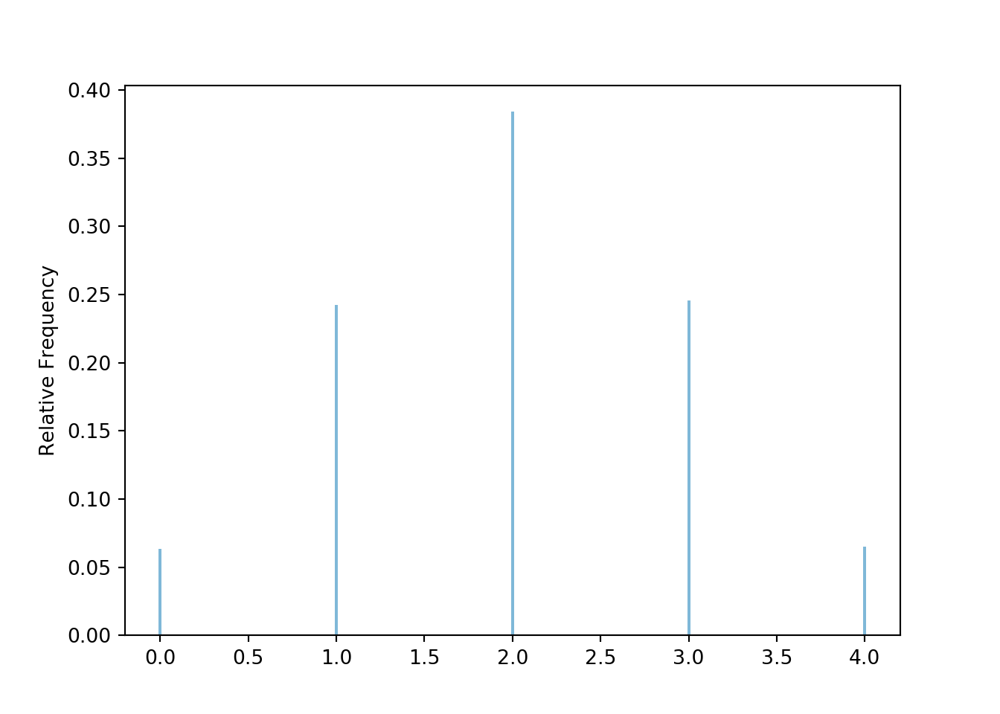

An Introduction to Probability and Simulation
2020-07-25
Preface
Why study probability and simulation?
Why study probability?
- Probability is the study of uncertainty, and life is uncertain
- Probability is used in a wide variety of fields, including: statistics, physics, engineering, biology, medicine, finance, actuarial science, political science, law, sports , …
- Many topics and problems in probability are frequently misunderstood and sometimes counter intuitive, so it’s worthwhile to take a careful study
- “Probabilistic thinking” is an important component of statistical literacy (e.g. how to assess risk when making decisions)
- Probability provides the foundation for many important statistical concepts and methods such as p-values and confidence intervals
Why use simulation to study probability?
- Many concepts encountered in probability can seem esoteric; simulation helps make them more concrete.
- Simulation provides an effective tool for analyzing probability models and for exploring effects of changing assumptions
- Simulation can be used to check analytical solutions
- Simulation is often the best or only method for investigating many problems which are too complex to solve analytically
- Simulation-based reasoning is an important component of statistical literacy (e.g. understanding a p-value via simulation)
- Many statistical procedures employ simulation-based methods (e.g. bootstrapping)
0.0.1 Learning Objectives/Goals/Style??? (Better title)
- Don’t skimp on rigorous definitions (RV is function defined on probspace) but deemphasize mathematical computation (counting and calculus)
- Emphasize simulation
- Visualize in lots of plots
- Start multivariate relationships early
- Rely on statistical literacy
- Active learning, workbook style
Symbulate
This book uses the Python package Symbulate (https://github.com/dlsun/symbulate) which provides a user friendly framework for conducting simulations involving probability models. The syntax of Symbulate reflects the “language of probability” and makes it intuitive to specify, run, analyze, and visualize the results of a simulation. In Symbulate, probability spaces, events, random variables, and random processes are symbolic objects which can be manipulated, independently of their simulated realizations. Symbulate’s consistency with the mathematics of probability reinforces understanding of probabilistic concepts. The article Ross and Sun (2019) discusses Symbulate and its features in more detail.
To install Symbulate, it is recommended that you first install the Anaconda distribution, which is a Python environment with many scientific packages installed (including all of the packages that Symbulate is built on). After installing Anaconda, the recommended way to installing Symbulate is run the command
!pip install symbulatefrom inside a notebook. (The Symbulate package can also be downloaded and installed manually from the Symbulate Github repository following these instructions.)
The following command imports Symbulate during a Python session.
The Symbulate command plot() produces graphics. These graphics can be customized (by changing axis limits, adding titles, legends, etc) using Matplotlib, and in particular the pyplot method, which can be imported with
import matplotlib
import matplotlib.pyplot as pltJupyter or Google Colab notebooks provide a natural interface for Symbulate. The code in this book matches as closely as possible the commands that would be entered into cells in a notebook. However, certain commands that appear throughout the book are needed only to properly produce the output in this book, and not if working directly in notebooks. In particular, plt.figure() and plt.show() are not needed to produce graphics in Jupyter (with the use of the %matplotlib inline “magic”). In addition, Jupyter automatically displays the result of the last line in a cell; print() is generally not needed to display output (unless you wish to format it, or it is not the last line in the cell).
For example, a code snippet that appears in this book as

## <symbulate.results.RVResults object at 0x00000000208C7EC8>
## <symbulate.results.RVResults object at 0x000000002B9FAAC8>would be entered in a Jupyter notebook as
Don’t do what Donny Don’t does
Some of the examples and exercises in this book are labeled “Don’t do what Donny Don’t does”. This is a Simpson’s reference. In this text, Donny represents a student who makes many of the mistakes commonly made by students studying probability. The idea of these problems is for you to learn from the common mistakes that Donny makes, by identifying why he is wrong and by helping him understand and correct his mistakes. (But be careful: sometimes Donny is right!)
{kind=link}
References
Ross, Kevin, and Dennis L. Sun. 2019. “Symbulate: Simulation in the Language of Probability.” Journal of Statistics Education 27 (1): 12–28. https://doi.org/10.1080/10691898.2019.1600387.
Xie, Yihui. 2015. Dynamic Documents with R and Knitr. 2nd ed. Boca Raton, Florida: Chapman; Hall/CRC. http://yihui.name/knitr/.
Xie, Yihui. 2020. Bookdown: Authoring Books and Technical Documents with R Markdown. https://github.com/rstudio/bookdown.